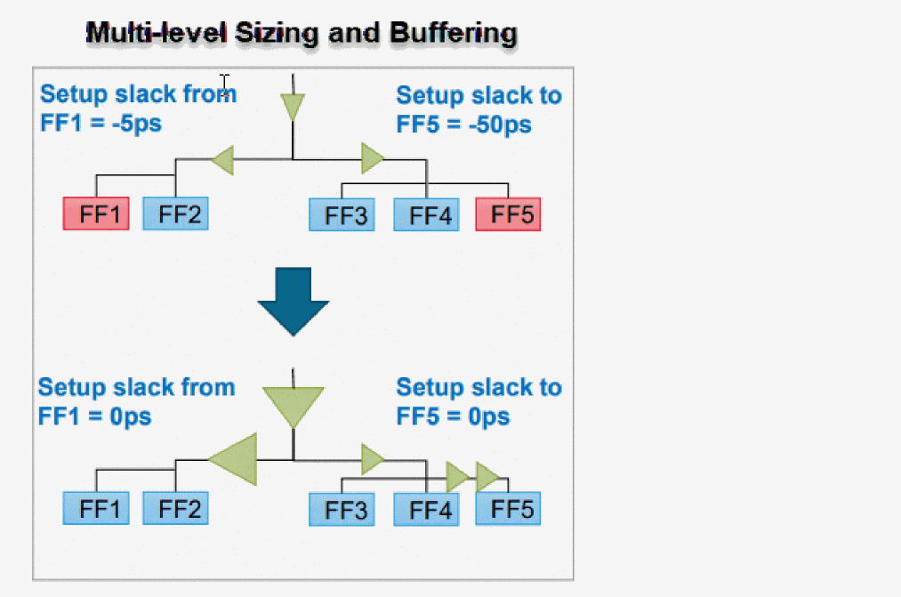

Performing Clock Skewing for Setup Timing Closure
Tempus ECO provides the ability to fix clock paths in order to fix the remaining setup timing violations. If the data path is fully optimized, the software uses useful skew, which includes two methods: early clock and late clock. This either reduces the launch clock delay or increases capture clock delay. The Tempus ECO engine can advance and delay clock arrival time to improve setup timing while not creating any new hold timing violations.
Below are the key features of a skew engine:
- Advanced clock tree manipulation to allow larger flexibility for clock skewing
- Sizing, deletion, and buffering (includes inverter pair and load cell) at any clock tree level
- Concurrent data path and clock path optimization for optimal timing closure
- Sophisticated push-pull weight and timing bottleneck-based engine
-
Support for max level skewing to avoid excessive padding using
set_db opt_signoff_clock_max_level <value>

It is mandatory to provide a list of clock cells that are allowed to be used on the clock tree. Those cells can be inverter, buffer, or any other combinational cells used as clock gaters.
set_db opt_signoff_clock_cell_list {CKBUFX1 CKBUFX4}
set_db opt_signoff_allow_skewing true
opt_signoff -setup
The above commands perform clock skewing during setup fixing. Only CKBUFX1 and CKBUFX4 can be added to the clock tree.
Related Topics
Return to top